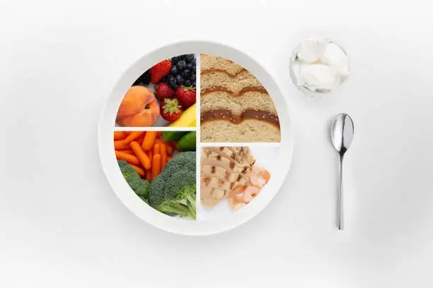
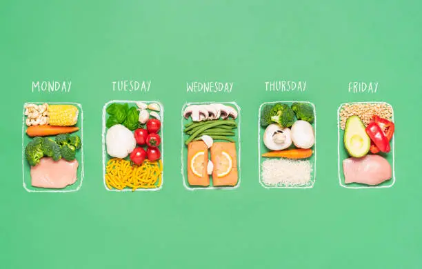

Latest Articles
The Power of Mindful Eating: Savoring Every Bite for Better Well-being
Posted on July 7, 2024 by The NutriyumNest Team
In our fast-paced world, eating has often become a rushed, unconscious act. We grab meals on the go, scroll through phones while chewing, and rarely truly connect with the food on our plates. This disconnect can lead to overeating, digestive issues, and a general lack of satisfaction from our meals. Enter mindful eating – a practice that invites us to slow down, pay attention, and truly savor every bite. It’s not a diet, but a powerful tool for cultivating a healthier relationship with food and enhancing overall well-being.
What is Mindful Eating?
Mindful eating is about bringing full awareness to your eating experience. It involves noticing the colors, textures, aromas, and flavors of your food. It’s about listening to your body’s hunger and fullness cues, recognizing your emotional triggers for eating, and appreciating the journey of your food from farm to plate. This practice is rooted in mindfulness, a form of meditation that focuses on being present in the moment without judgment. By applying mindfulness to eating, we move away from automatic, often unhealthy, eating patterns and towards intentional, nourishing choices.
Why Practice Mindful Eating?
The benefits of mindful eating are extensive and impactful. Firstly, it can significantly improve digestion. When we eat quickly, our bodies may not produce enough digestive enzymes, leading to discomfort. Mindful eating encourages thorough chewing, which is the first step in proper digestion. Secondly, it helps prevent overeating. By paying attention to fullness cues, you learn to stop when you’re satisfied, not just when your plate is empty. This can naturally lead to weight management without restrictive dieting.
Beyond physical benefits, mindful eating can reduce stress and anxiety around food. It helps you identify emotional eating patterns – eating out of boredom, stress, or sadness – and develop healthier coping mechanisms. It fosters a deeper appreciation for food, transforming meals from a mundane necessity into a joyful, sensory experience. This positive relationship with food can extend to other areas of your life, promoting overall calmness and gratitude.
How to Start Your Mindful Eating Journey: Practical Tips
Starting mindful eating doesn't require drastic changes. Begin with small, actionable steps:
- Eliminate Distractions: Turn off the TV, put away your phone, and step away from your computer. Make your mealtime a dedicated moment.
- Engage Your Senses: Before you even take a bite, look at your food. Notice its colors, shapes, and how it’s arranged. Inhale its aroma. What does it remind you of?
- Chew Slowly and Thoroughly: Aim for 20-30 chews per bite. This helps with digestion and allows your brain time to register fullness.
- Notice Flavors and Textures: As you chew, identify individual flavors. Is it sweet, salty, sour, bitter, umami? What are the different textures?
- Listen to Your Body: Before eating, check in with your hunger level (on a scale of 1-10). During the meal, pause periodically and assess your fullness. Stop when you feel comfortably satisfied, not stuffed.
- Eat Slowly: Put your fork down between bites. Take sips of water. This naturally slows you down.
- Practice Gratitude: Take a moment to appreciate the food, its source, and the effort involved in bringing it to your table.
Mindful eating is a journey, not a destination. Some meals will be more mindful than others, and that’s perfectly okay. The goal is progress, not perfection. By consistently bringing awareness to your eating, you’ll gradually cultivate a more intuitive, satisfying, and healthier relationship with food. This practice aligns beautifully with NutriyumNest’s philosophy of nourishing simply and enjoying fully, transforming every meal into an opportunity for wellness. Embrace the calm, comforting rhythm of mindful eating and discover a deeper connection to your food and yourself.
This practice also encourages us to be more aware of the ingredients we choose. When we are mindful, we naturally gravitate towards wholesome, real foods that truly nourish our bodies. It’s about quality over quantity, and understanding how different foods make us feel. This heightened awareness can lead to more balanced dietary choices without the need for strict rules or restrictive diets. It becomes an intuitive process of selecting foods that support our energy levels, mood, and overall vitality.
Consider starting with just one meal a day, perhaps breakfast, to practice mindful eating. As you become more comfortable, gradually extend the practice to other meals. You might find that you enjoy your food more, feel more satisfied with smaller portions, and experience fewer digestive issues. Mindful eating is a gentle yet powerful approach to wellness that fits perfectly into the NutriyumNest philosophy – it’s about feeling good, inside and out, through simple, wholesome habits.
The journey of mindful eating is deeply personal. There's no right or wrong way to do it, only your way. It's about curiosity and self-compassion. If you find yourself distracted or rushing, simply acknowledge it without judgment and gently guide your attention back to your meal. Over time, these moments of mindful awareness will accumulate, leading to lasting positive changes in your eating habits and overall well-being. It’s a beautiful way to honor your body and truly nourish yourself.
Furthermore, mindful eating can help us distinguish between physical hunger and emotional hunger. Often, we reach for food out of habit, stress, or boredom, rather than true physiological need. By pausing and checking in with ourselves, we can ask: "Am I truly hungry, or am I seeking comfort, distraction, or a way to cope with an emotion?" This self-inquiry is a crucial step towards breaking unhealthy eating cycles and developing more constructive ways to deal with our feelings. It empowers us to make conscious choices, rather than being driven by unconscious urges.
Incorporating mindful eating into your daily routine can also enhance your cooking experience. When you're more present with your ingredients, you appreciate the process of preparing food, from chopping vegetables to stirring a simmering pot. This connection to the act of cooking can make meals even more enjoyable and fulfilling. It transforms cooking from a chore into a creative and nourishing act, further aligning with the NutriyumNest vision of making wellness a joyful part of everyday life.
Ultimately, mindful eating is about cultivating a deeper respect for our bodies and the food that sustains us. It's about slowing down in a world that constantly tells us to speed up, and finding moments of peace and nourishment in the everyday act of eating. It's a practice that offers profound benefits for both physical and mental health, helping us to live more intentionally and to truly thrive. Embrace this gentle approach and let every bite be a step towards greater wellness.

Building a Balanced Plate: A Simple Guide for Everyday Wellness
Posted on June 28, 2024 by The NutriyumNest Team
In the world of nutrition, it's easy to get overwhelmed by conflicting information and complicated rules. At NutriyumNest, we believe in simplicity and balance. Building a balanced plate doesn't have to be complex; it's about understanding the key components that nourish your body and make you feel good. This guide will help you create meals that are satisfying, energizing, and contribute to your overall well-being, without the need for strict calorie counting or restrictive diets. It’s about making smart, wholesome choices that fit into your real life.
The Core Components of a Balanced Plate
Think of your plate as a canvas, and each food group as a different color. To create a vibrant and nutritious masterpiece, you need a mix of:
- Half Your Plate: Fruits & Vegetables (The Colorful Powerhouses)
These are your primary source of vitamins, minerals, fiber, and antioxidants. Aim for a variety of colors to ensure a broad spectrum of nutrients. Think dark leafy greens, vibrant berries, crunchy bell peppers, and sweet potatoes. They provide bulk, help you feel full, and support countless bodily functions. Filling half your plate with these ensures you're getting nutrient density with fewer calories.
- A Quarter of Your Plate: Lean Protein (The Building Blocks)
Protein is essential for building and repairing tissues, making enzymes and hormones, and keeping you feeling full and satisfied. Choose lean sources like chicken breast, turkey, fish (salmon, cod), eggs, tofu, lentils, beans, and chickpeas. Plant-based proteins are excellent for fiber and often come with fewer saturated fats. Incorporating protein at each meal helps stabilize blood sugar and prevents energy crashes.
- A Quarter of Your Plate: Whole Grains & Complex Carbohydrates (Sustained Energy)
Unlike refined grains, whole grains retain all parts of the grain (bran, germ, endosperm), providing more fiber, B vitamins, and minerals. Examples include quinoa, brown rice, whole-wheat pasta, oats, and whole-grain bread. Complex carbohydrates provide sustained energy, fuel your brain, and support digestive health. They are crucial for maintaining consistent energy levels throughout your day.
- Healthy Fats (The Essential Boost)
While not a "section" of your plate, healthy fats are vital for nutrient absorption, hormone production, and brain health. Incorporate sources like avocados, nuts, seeds (chia, flax, hemp), olive oil, and fatty fish. A small amount goes a long way in adding flavor and satiety to your meals. They help you feel full and satisfied, contributing to overall meal enjoyment.
Putting It Into Practice: Meal Examples
Here’s how you can apply the balanced plate concept to everyday meals:
- Breakfast: Oatmeal with berries and a sprinkle of nuts/seeds (whole grain + fruit + healthy fat), or scrambled eggs with spinach and whole-wheat toast (protein + vegetable + whole grain).
- Lunch: Large salad with mixed greens, colorful veggies, chickpeas/grilled chicken, and an olive oil vinaigrette (vegetables + protein + healthy fat).
- Dinner: Baked salmon with roasted broccoli and quinoa (protein + vegetable + whole grain).
Tips for Success
- Variety is Key: Don't eat the same thing every day. Rotate your fruits, vegetables, and protein sources to ensure a wide range of nutrients.
- Listen to Your Body: The "balanced plate" is a guide, not a rigid rule. Adjust portions based on your hunger, activity level, and individual needs.
- Hydrate: Don't forget water! It's essential for all bodily functions and often overlooked.
- Prep Ahead: Wash and chop vegetables, cook a batch of quinoa, or pre-portion proteins to make meal assembly quicker during busy times.
- Be Flexible: Life happens! If a meal isn't perfectly balanced, don't stress. Focus on making the next meal a nourishing one.
Building a balanced plate is about creating sustainable habits that make you feel good. It’s about nourishing your body with real, wholesome ingredients in a way that’s simple, enjoyable, and fits your lifestyle. Embrace this gentle approach to eating, and you’ll find yourself feeling more energized, satisfied, and vibrant. This simple guide empowers you to make informed choices without the pressure of perfection, aligning perfectly with the NutriyumNest philosophy of "Nourish Simply. Enjoy Fully."
This approach also encourages creativity in the kitchen. Once you understand the basic components, you can mix and match ingredients to create endless delicious combinations. It transforms cooking from a chore into an exciting exploration of flavors and textures. You'll naturally discover new favorite meals that are both healthy and satisfying.
Remember, balance isn't about being perfect all the time. It's about consistency and making conscious choices most of the time. If you have a treat, enjoy it without guilt, and then return to your balanced eating patterns. This flexible mindset is key to long-term success and a positive relationship with food.
By focusing on these core principles, you'll naturally reduce your intake of processed foods, excessive sugars, and unhealthy fats. Your body will thank you with increased energy, improved digestion, and a stronger immune system. It's a holistic approach that supports not just physical health, but mental and emotional well-being too.
The beauty of the balanced plate model is its adaptability. It works for various dietary preferences, from vegetarian to omnivore. You can easily substitute plant-based proteins for animal proteins, or adjust carbohydrate sources to suit your needs. It's a framework that empowers you to take control of your nutrition in a flexible and intuitive way.
Ultimately, NutriyumNest is here to support you on your wellness journey. Building a balanced plate is a fundamental step towards feeling your best, every single day. It’s about making food your friend, a source of joy and vitality.

The Secret to Hydration: More Than Just Water
Posted on June 20, 2024 by The NutriyumNest Team
We all know that staying hydrated is crucial for health, but often, our understanding begins and ends with drinking eight glasses of water a day. While water is undoubtedly the cornerstone of hydration, it's only part of the story. Optimal hydration involves a broader approach, incorporating electrolyte balance and water-rich foods. At NutriyumNest, we believe in a holistic view of wellness, and understanding true hydration is a vital piece of that puzzle. Let's dive deeper into how you can keep your body optimally hydrated and feeling its best.
Why is Hydration So Important?
Water makes up about 60% of your body weight and is involved in countless essential bodily functions. It helps regulate body temperature, lubricates joints, transports nutrients, removes waste products, and maintains organ function. Even mild dehydration can lead to fatigue, headaches, decreased concentration, and impaired physical performance. Chronic dehydration can contribute to more serious health issues over time. Proper hydration is fundamental to energy levels, mood, cognitive function, and even skin health.
The Role of Electrolytes
Electrolytes are minerals that carry an electric charge when dissolved in water. They are vital for muscle function, nerve signaling, maintaining fluid balance, and regulating blood pressure. Key electrolytes include sodium, potassium, calcium, magnesium, and chloride. While excessive sodium is often demonized, a balanced intake of all electrolytes is crucial, especially if you're active or sweating a lot. Drinking plain water excessively without replacing electrolytes can sometimes dilute your body's electrolyte balance, leading to issues like hyponatremia (low sodium).
Hydration Beyond the Glass: Water-Rich Foods
One of the most enjoyable ways to stay hydrated is through the foods you eat. Many fruits and vegetables have incredibly high water content, contributing significantly to your daily fluid intake. They also come packed with vitamins, minerals, and natural electrolytes.
- Cucumber: Approximately 95% water. Also contains Vitamin K and potassium.
- Watermelon: Around 92% water. Rich in lycopene and Vitamins A and C.
- Strawberries: About 91% water. Excellent source of Vitamin C and antioxidants.
- Cantaloupe: Roughly 90% water. Provides Vitamins A and C, and potassium.
- Celery: About 95% water. Contains Vitamin K and folate.
- Lettuce: Up to 96% water. Good source of Vitamin K and A.
- Oranges: Around 87% water. High in Vitamin C and potassium.
Incorporating these foods into your meals and snacks is a delicious and natural way to boost your hydration levels. Think vibrant salads, refreshing fruit platters, and hydrating smoothies.
Practical Tips for Optimal Hydration
- Start Your Day Hydrated: Drink a glass of water first thing in the morning.
- Carry a Reusable Water Bottle: Keep it visible and refill it throughout the day.
- Flavor Your Water Naturally: Add slices of lemon, lime, cucumber, or berries to make water more appealing.
- Eat Your Water: Prioritize water-rich fruits and vegetables in your diet.
- Listen to Your Body: Thirst is a sign of dehydration. Don't wait until you're parched.
- Monitor Urine Color: Pale yellow usually indicates good hydration. Darker urine suggests you need more fluids.
- Consider Electrolyte Drinks (When Needed): For intense workouts or prolonged heat exposure, a natural electrolyte drink (like coconut water or homemade fruit-infused water with a pinch of sea salt) can be beneficial.
Optimal hydration is more than just a habit; it's a foundational pillar of wellness. By understanding the role of water, electrolytes, and water-rich foods, you can take a more holistic and enjoyable approach to keeping your body functioning at its best. Embrace these simple strategies and feel the difference in your energy, clarity, and overall vitality. At NutriyumNest, we encourage you to nourish your body from the inside out, and that journey begins with proper hydration.
Beyond the physical benefits, proper hydration also plays a significant role in cognitive function. Our brains are largely composed of water, and even slight dehydration can impair memory, focus, and overall mental performance. Staying well-hydrated ensures that your brain receives adequate blood flow and nutrients, helping you to think more clearly, stay alert, and maintain optimal cognitive processing throughout the day. This is particularly important for those with demanding jobs or students who need to maintain peak mental acuity.
Hydration also impacts your mood and emotional well-being. Dehydration can exacerbate feelings of irritability, anxiety, and even depression. When your body is properly hydrated, your systems function more smoothly, leading to a greater sense of calm and emotional stability. It's a simple yet powerful way to support your mental health alongside your physical health.
For those who struggle to drink enough plain water, consider herbal teas (caffeine-free) as another excellent source of hydration. They offer a variety of flavors and can be enjoyed hot or cold, providing a comforting alternative to plain water. Soups and broths are also fantastic for hydration, especially during colder months, as they provide both fluids and electrolytes.
Remember that individual hydration needs can vary based on factors like activity level, climate, and overall health. Pay attention to your body's signals and adjust your fluid intake accordingly. The key is consistent, mindful hydration throughout the day, rather than trying to chug a large amount of water all at once.
By embracing a comprehensive approach to hydration, you're not just quenching thirst; you're actively supporting every cell and system in your body. It's a simple, yet profound, act of self-care that aligns perfectly with the NutriyumNest philosophy of holistic wellness. Make hydration a joyful and integral part of your daily routine, and experience the profound benefits it brings to your overall health and vitality.

Meal Planning Made Easy: Your Stress-Free Week Starts Here
Posted on June 15, 2024 by The NutriyumNest Team
Does the thought of "what's for dinner?" fill you with dread each evening? Do you find yourself resorting to takeout more often than you'd like, despite good intentions? Meal planning can be a game-changer for your health, budget, and peace of mind. At NutriyumNest, we believe meal planning should be simple, stress-free, and adaptable to your real life. It's not about rigid schedules, but about creating a flexible framework that supports your wellness goals. Let’s unlock the power of easy meal planning together.
Why Meal Plan? The Benefits Are Abundant!
- Saves Time: No more last-minute scrambling or multiple grocery trips.
- Saves Money: Reduces impulse buys, food waste, and expensive takeout.
- Reduces Stress: Knowing what you're eating eliminates daily decision fatigue.
- Promotes Healthier Eating: Encourages balanced meals and mindful ingredient choices.
- Reduces Food Waste: You buy only what you need and use it efficiently.
- Supports Dietary Goals: Easier to stick to specific nutritional needs or preferences.
How to Get Started: A Simple 5-Step Process
Don't overcomplicate it! Start with these simple steps:
- Assess Your Week: Look at your schedule. Are there busy nights where quick meals are essential? Any special events? This helps you plan realistically.
- Choose Your Meals:
- Start Small: Plan 3-4 dinners first, then add lunches and breakfasts as you get comfortable.
- Theme Nights: "Meatless Monday," "Taco Tuesday," "Pasta Wednesday" can spark ideas.
- Repurpose Leftovers: Plan for meals that can be easily repurposed (e.g., roasted chicken for dinner becomes chicken salad for lunch).
- Consult Your Favorites: What recipes does your family already love? Include them!
- Utilize NutriyumNest Recipes: Browse our wholesome, family-friendly collection for inspiration.
- Create Your Grocery List:
Once you have your meals, list all the ingredients you need. Check your pantry and fridge first to avoid buying duplicates. Organize your list by supermarket sections (produce, dairy, pantry, etc.) for efficiency.
- Prep for Success (Optional but Recommended):
Dedicate an hour or two on a less busy day (e.g., Sunday) for "meal prep." This could involve:
- Chopping vegetables for multiple meals.
- Cooking a batch of grains (quinoa, brown rice).
- Washing and portioning fruits and greens.
- Making a large batch of dressing or sauce.
This makes weeknight cooking much faster.
- Be Flexible:
Life happens! If plans change, don't abandon your whole plan. Shift meals around. If you don't feel like cooking one night, swap it for a simpler meal or a planned leftover night. The goal is to reduce stress, not create more.
Advanced Tips for Meal Planning Mastery
- Batch Cooking: Cook larger quantities of staple ingredients (like roasted vegetables, grilled chicken, or grains) that can be used in multiple meals throughout the week.
- Freezer Friendly: Identify recipes that freeze well (soups, stews, casseroles) and make double batches to store for future busy nights.
- Ingredient Overlap: Choose meals that share common ingredients to minimize your grocery list and reduce waste.
- Digital Tools: Explore apps or online planners if you prefer digital organization, but a simple notebook works just as well!
Meal planning is a powerful habit that empowers you to take control of your nutrition and your time. It transforms the daily dinner dilemma into a smooth, enjoyable process. By embracing this simple, positive approach, you'll find yourself eating healthier, saving money, and enjoying more peace of mind in your kitchen. Start small, be consistent, and watch how meal planning becomes your secret weapon for a stress-free, well-nourished week, the NutriyumNest way.
Beyond the practical benefits, meal planning also fosters a deeper connection to your food. When you consciously choose what you'll eat, you become more aware of the ingredients, their origins, and their nutritional value. This mindful approach to food selection is a cornerstone of the NutriyumNest philosophy, encouraging you to make intentional choices that truly nourish your body and soul. It's about building a sustainable, positive relationship with food, free from guilt or restrictive thinking.
Moreover, meal planning can be a creative outlet. Instead of seeing it as a chore, view it as an opportunity to experiment with new recipes, explore different cuisines, and incorporate a wider variety of wholesome ingredients into your diet. Our NutriyumNest recipe library is a fantastic resource for this, offering balanced and delicious options that fit seamlessly into any meal plan. You might discover new family favorites and expand your culinary horizons.
Don't be discouraged if your first few attempts at meal planning aren't perfect. It's a skill that improves with practice. Each week, you'll learn more about what works best for your schedule, your family's preferences, and your personal energy levels. The key is to remain flexible and to view any "setbacks" as learning opportunities. The ultimate goal is to create a system that supports your well-being and simplifies your life, making healthy eating a joyful and effortless part of your routine.
Consider involving your family in the meal planning process. Let them choose a few meals each week, or help with grocery list creation. This not only makes them more invested in the plan but also teaches valuable life skills. Meal planning can become a collaborative and fun activity that brings everyone together around the shared goal of healthy, delicious food.
Ultimately, meal planning is about investing in yourself and your health. It’s about creating a proactive approach to nourishment that reduces stress and maximizes enjoyment. Embrace the journey, and you’ll soon wonder how you ever managed without it.